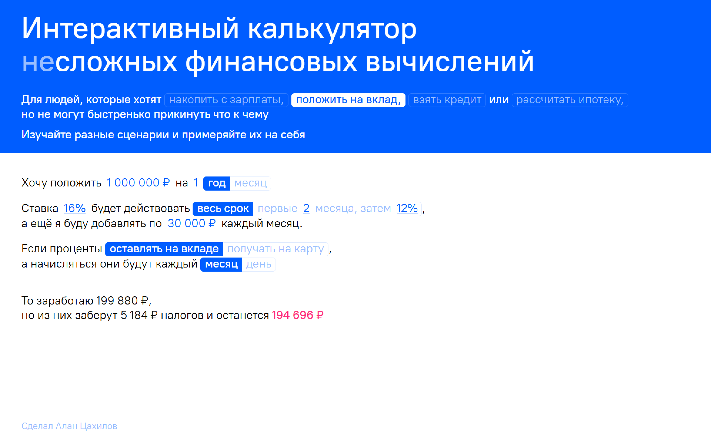

Калькулятор сложных финансовых вычислений

Сделал калькулятор, который без форм и банковского канцелярита помогает быстренько прикинуть: сколько денег заработаешь с вклада, сколько из них уйдёт государству, сколько месяцев надо копить на разные вещи, сколько можно откладывать денег с зарплаты в месяц и сколько это получится в год.
Можно играть со сценариями: менять суммы, сроки, проценты. Прикидывать варианты вложений и доходов. Калькулятор даёт моментальную обратную связь.
Проект реализован на легком независимом стеке — HTML, CSS и JavaScript. Развёрнут на собственном домене, работает по безопасному протоколу. Всё это под гитом.
Релиз: 20 августа, 2026 года. Сейчас работаю над сценарием калькулятора кредитов и ипотеки. Возможно, уже добавлено.
chtokchemu.ru